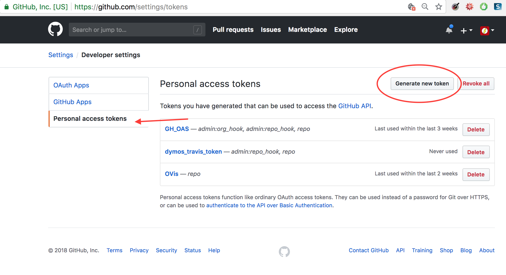
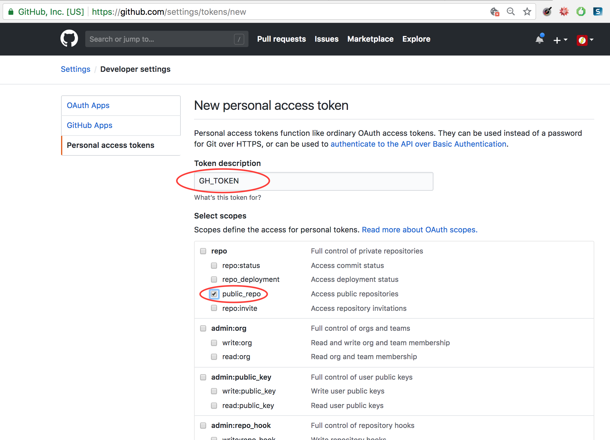
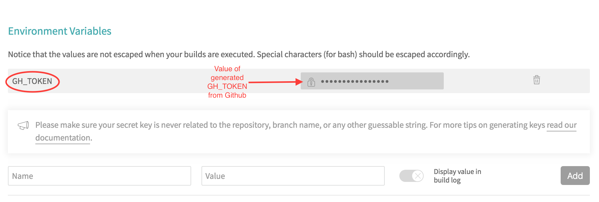
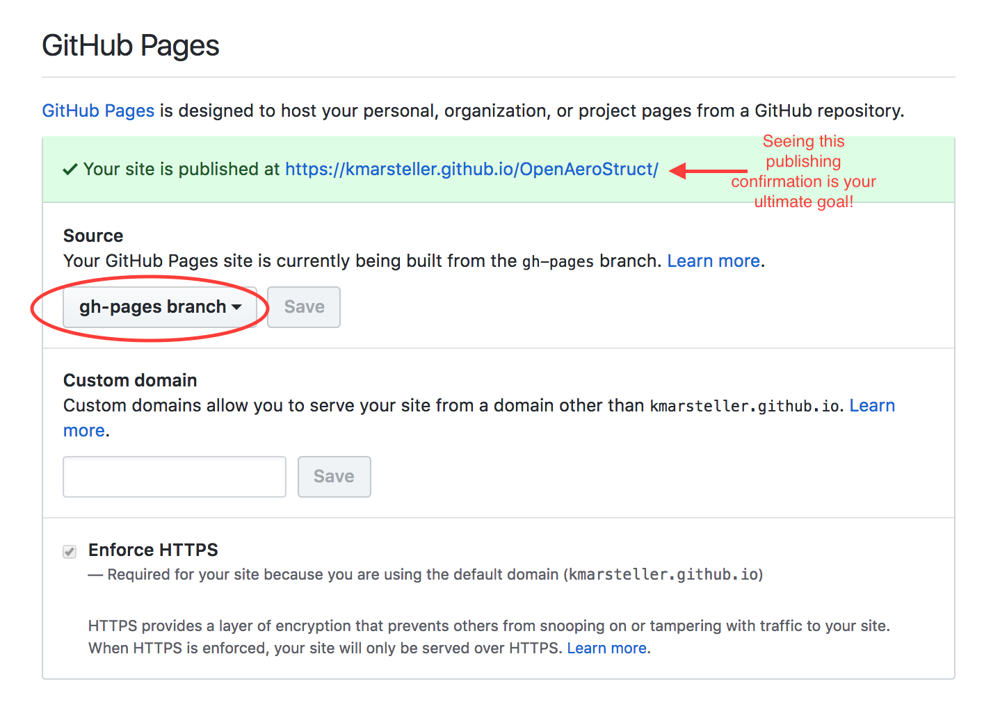

Hosting Documentation on github-pages¶
The purpose of this document is to teach you how to host your project’s documentation on github-pages. In it we’ll show a repo owner how to get their docs built on Travis CI and then transfer those built docs to a github-pages branch for public viewing by a project’s users.
Warning
If you want to publish to github-pages from your docs built on Travis CI, your Github repository must be public, and you must be using travis-ci.ORG (not the private .COM)–otherwise the instructions in this document will not work for you.
Personal Access Token¶
A Personal Access Token is something created on Github, to allow another service (e.g. Travis) to access Github, with a certain amount of permission. Once you create a Personal Access Token, it will be visible for one viewing, and you must copy it then use it immediately before you lose it (and then you have to make another one).
To create a Personal Access Token: Log in to github.com. Go to Github account Settings (not Repo Settings)->Dev Settings->Personal Access Token The menu will look like this:
Give the access token the name GH_TOKEN, and the permission “repo access,” as pictured:
You’ll need this token to allow the transfer of your documents to github-pages, once they are built on Travis CI.
Then on Travis CI, you’ll need to go to your Environment Variables section, and create a new variable, as shown here:
github-pages¶
In order to have your documents build on Travis CI and then deploy to github-pages, you’ll need to make a branch called gh-pages in your Github repo. Then you will need to go into your Github Pages settings, (which is located in your organization/projectname repository settings) and set the repo to look at that branch, as illustrated here:
travis-sphinx Usage¶
travis-sphinx is a standalone script for automated building and deploying of sphinx docs to github-pages via TravisCI.
Once your personal access token is set up, you can begin using travis-sphinx within your Travis configuration file. (docs/.travis.yml) The two calls that should be used are, in their respective sections:
script:
- travis-sphinx build
after_success:
- travis-sphinx deploy
build will generate the actual documentation files, while deploy will move those files to gh-pages.
For further details of how Travis-Sphinx can be configured, see this guide